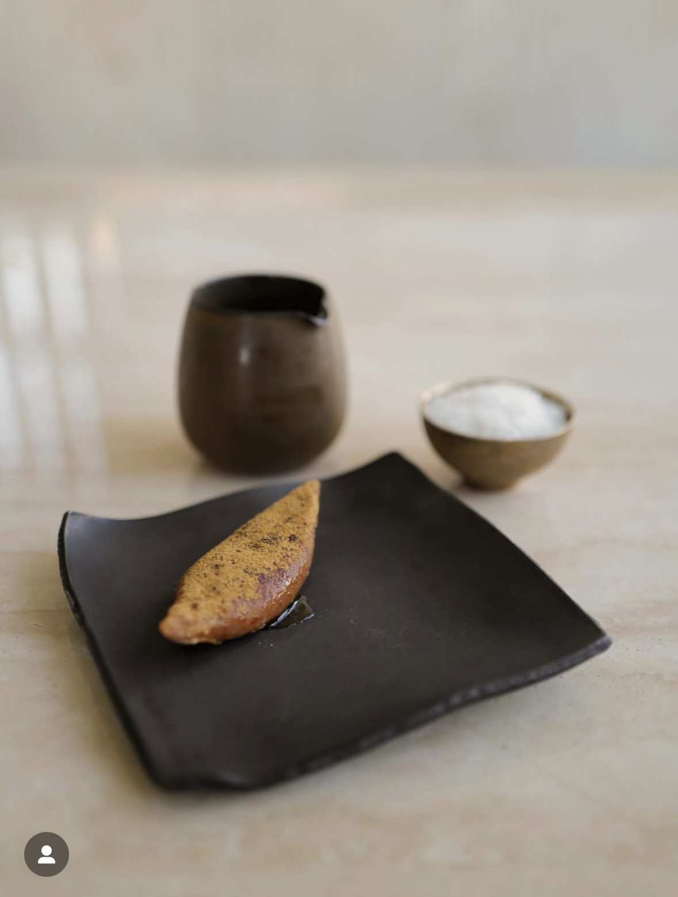

jw.sson
·
5시간
Eatanic Garden

2.1만
208
jw.sson
추운 겨울날 드럼통 안에서 갓 나온 노릇하게 잘 구워진 군고구마를 껍질째 한입 베어 물면
‘이건 너무나도 기분 좋은 겨울의 맛이잖아’라 생각이 듭니다....
추운 겨울날 드럼통 안에서 갓 나온 노릇하게 잘 구워진 군고구마를 껍질째 한입 베어 물면
‘이건 너무나도 기분 좋은 겨울의 맛이잖아’라 생각이 듭니다....
겨울 메뉴 준비를 위한 아이디어 회의를 할 때면 군고구마는 늘 단골손님으로 등장합니다.
다양한 형태의 디저트로 만들어져 테이스팅을 거치지만, 잘 익은 군고구마만큼 만족감을 주기가 어렵다는 이유로 항상 메뉴 선정에서 탈락해 왔습니다.
몇 년에 걸친 여러 번의 시도 끝에(라망 시크레까지 합치면 수십번의) 이타닉 가든
에서 처음으로 ‘군고구마’라는 주제를 갖고 만들어진 디저트를 준비해 드리고 있습니다.
전병을 부쳐 그 안에 흘러내리는 고구마 속을 채운 뒤 다시 그 전병을 바삭하게 익
혀 내고 구운 고구마 껍질을 갈아 만든 가루와 고구마꿀을 뿌려냈습니다.
동치지를 담구어 배와 함께 콤부차 형태로 만들어 '군고구마'가 조금은 텁텁하게 느
껴질 때 시원하게 입가심을 하실 수 있도록 함께 준비 했습니다.
기분 졸은 한국의 겨울의 맛을 담아 보았습니다.
Whenever we brainstorm winter menus, roasted sweet potatoes are
regular. They are made into various desserts and go through
tastings. However, they are always rejected because they do not
deliver the same level of satisfaction as a perfectly well roasted
sweet potato.
After years of experimentation, Eatanic Garden is now offering its
first “roasted sweet potato” dessert. We start by making ‘junbyeong,’
filling it with creamy and runny sweet potato filling, then pan fry the
junbyeong until crispy. And dust it with ground roasted sweet potato
skin and sweet potato honey.
This ‘roasted sweet potato’ is prepared with this kombucha-style
drink, made with pickled dongchimi and pears, very traditional
pairing of roasted sweet potato and well ripened dongchimi.
We have captured the delightful flavors of Korea’s winter.
#evolve